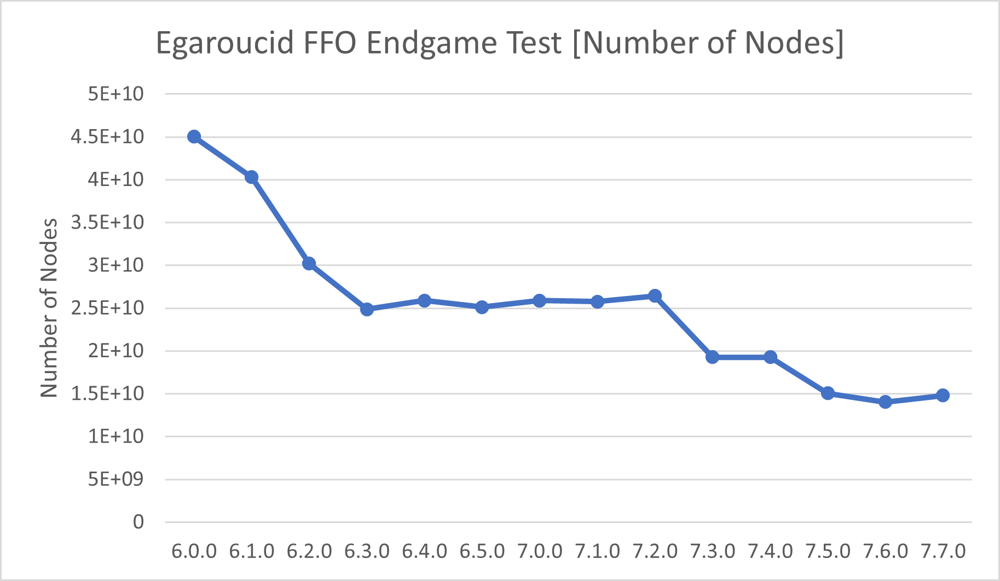
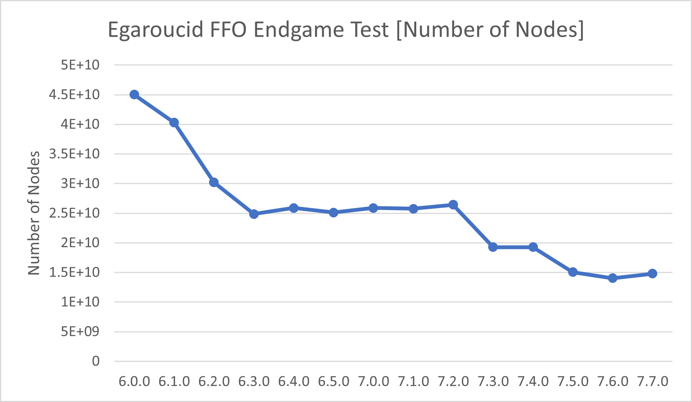

Egaroucid 技術資料
ベンチマーク
Egaroucidの性能の確認として2種類のベンチマークを使用しています。1つ目はThe FFO endgame test suiteです。これは、終盤の完全読みにかかる時間に関するベンチマークです。2つ目は対戦です。Egaroucidの過去バージョンの他、他の強豪オセロAIとの対戦として、Edax 4.4とも対戦しました。単純に評価関数の強さを計測するため、bookを使わず、XOTという初期局面集を用いて対戦させました。
The FFO endgame test suite
終盤探索は、以下3つの指標で評価しています。
- 計算時間
- 訪問ノード数
- NPS (1秒あたりのノード訪問回数)
ユーザにとって一番重要なのは計算時間です。決まったテストケースを処理するのにかかる時間を秒数で表します。ここではThe FFO endgame test suiteの40から59番のテストケース(20から34手完全読み)にかかる時間を使いました。これは減ると嬉しい値です。
計算時間を短くするには、まず(厳密に)無駄な探索を減らせば良いです。無駄な探索が多いと訪問ノード数(探索した盤面の数)が増えます。これも減ると嬉しい値です。
計算時間を短くするためのもう一つの観点は、1秒あたりのノード訪問回数を上げることです。これはNodes Per Secondの頭文字を取ってNPSと言われます。これは上がると嬉しい値です。
以下はThe FFO endgame test suiteの40から59番をCore i9 13900Kで実行した結果を、バージョンを横軸に取ってグラフにしたものです。SIMD版を使用しました。
 

XOTによる対戦
オセロAIの強さを評価するためには、対戦するのが一番でしょう。ここでは、各バージョンにEdax 4.4を加え、総当たり戦をした結果を掲載します。
対戦はレベル1(中盤1手読み、終盤2手完全読み)で行いました。
対戦にはそれぞれXOTの進行を初期盤面として使い、各進行では先手後手それぞれ1回ずつ対戦させています。
| 名称 | 勝率 |
|---|---|
| 7.1.0 | 0.5770 |
| 7.0.0 | 0.5537 |
| 6.5.X | 0.5434 |
| 6.4.X | 0.4904 |
| 6.3.X | 0.4561 |
| 6.1.X | 0.5020 |
| 6.0.X | 0.4451 |
| Edax | 0.4321 |
対戦の詳細はこちら
Egaroucid 6.2.0はEgaroucid 6.3.0と同一の評価関数のため、省いています。
バージョンごとの詳細
各バージョンのベンチマークを公開します。上で載せなかった古いバージョンのベンチマークもあります。
こちらの詳細はバージョンごとに少し条件が違うものもありますので、詳細はそれぞれのページをご覧ください。
| バージョン | リリース時期 |
|---|---|
| 7.1.0 | TBD |
| 7.0.0 | 2024/04/17 |
| 6.5.0 | 2023/10/25 |
| 6.4.0 | 2023/09/01 |
| 6.3.0 | 2023/07/09 |
| 6.2.0 | 2023/03/15 |
| 6.1.0 | 2022/12/23 |
| 6.0.0 | 2022/10/10 |
| 5.10.0 | 2022/06/08 |
| 5.9.0 | 2022/06/07 |
| 5.8.0 | 2022/05/13 |
| 5.7.0 | 2022/03/26 |
| 5.5.0/5.6.0 | 2022/03/16 |
| 5.4.1 | 2022/03/02 |
技術解説
日本語のみでEgaroucidの技術解説を書きました。のんびりと追記します。
棋譜公開
Egaroucidによる自己対戦で生成した棋譜を大量に公開しています。詳しくは棋譜公開をご覧ください。